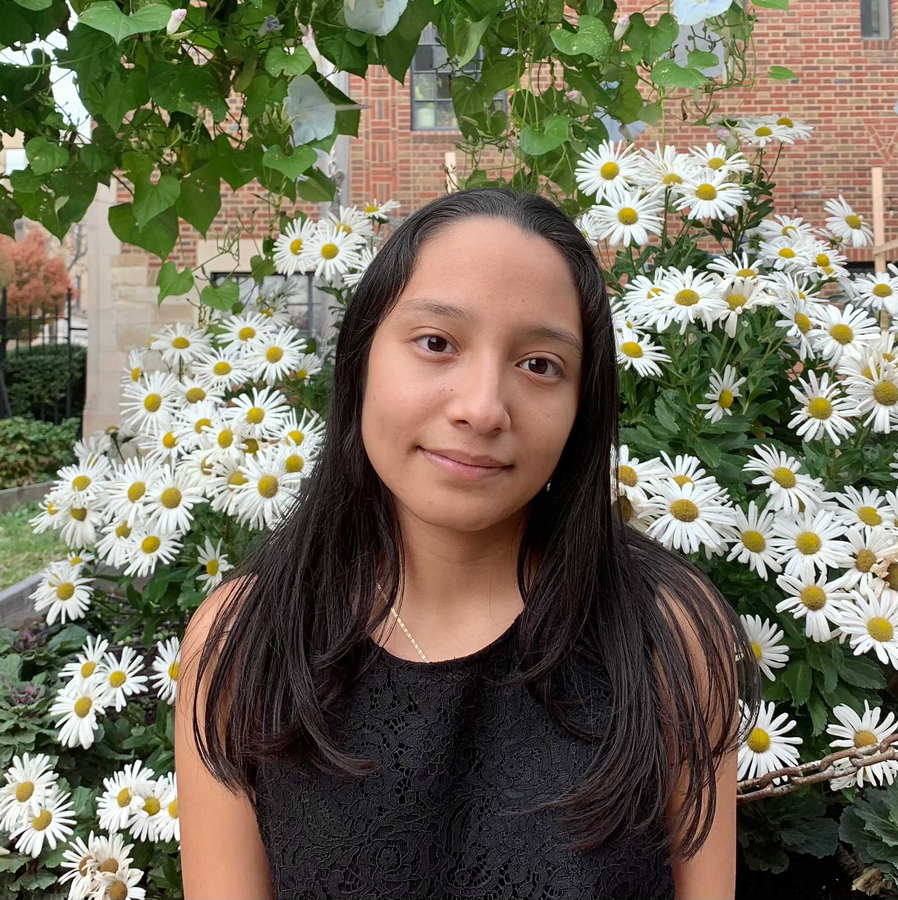
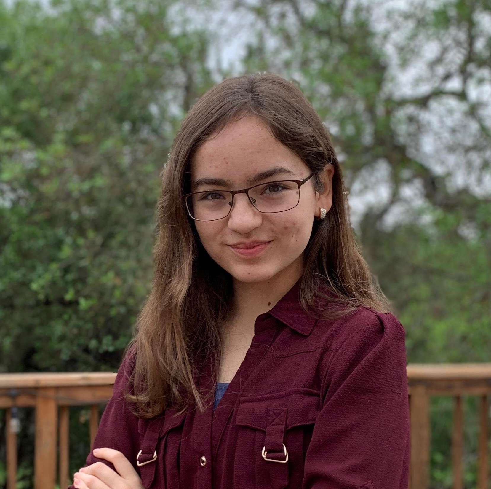
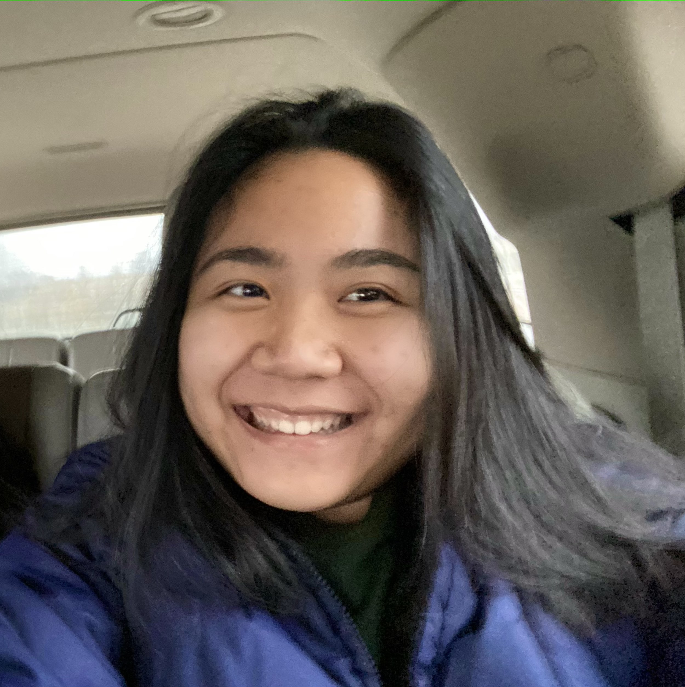
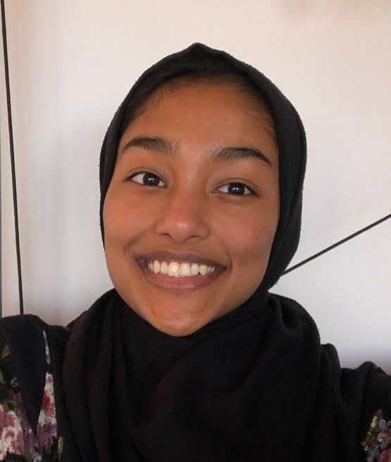

MIT Individualized Tutoring for English and Citizenship (ITEC) is a cost-free tutoring service where MIT students work 1-on-1 with residents in the Greater Boston Area seeking US citizenship. Our program is run entirely by MIT undergraduates who are passionate in language-based community service and work under the broader student group ActLingual.
Personalized support from tutors provides an opportunity for students to improve their English skills and familiarize themselves with the naturalization interview process. Our tutors are MIT students, who are all fluent in English, and with additional language capabilities for Spanish, Mandarin Chinese, Vietnamese, and more.
The tutoring sessions will be held virtually over Zoom, and once a week for each tutoring term (9 weeks total).
Team
Leaders

Jessica Jimenez is a sophomore majoring in Biology
Lulu Tian is a senior majoring in Computer Science + Brain and Cognitive Sciences
Committee Officers

Dharma Palacios is a sophomore majoring in Computer Science

Nghi Nguyen is a junior majoring in Computer Science

Shaida Nishat is a senior majoring in Biology
Contact Us
We would love to hear from you!
Contact us at actlingual-acc@mit.edu
with any questions or comments